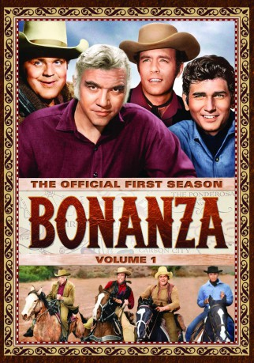

IMDB-Wertung: 7.5 / 10
IMDB-Wertung: 7.5 / 10  Metascore:
Metascore: 
The Pony Express comes to Virginia City and Little Joe decides to join. Soon Indians react to express riders invading their lands.
Alternativ: Ride the Wind: Part 1 (Originaltitel)
 IMDB-Wertung: 7.5 / 10 Metascore:
The Pony Express comes to Virginia City and Little Joe decides to join. Soon Indians react to express riders invading their lands.
Jahr: 1966
Dauer: 93 Minuten
FSK:
Land: USA Studio: NBCTonspuren: DTS - ,
Untertitel:
Auflösung: 1080p (1460x1080) Größe: 6717 MB
Genre: Western
Regisseur: William Witney
Drehbuch: Ian Helfer
Soundtrack:
Darsteller:
 Lorne Greene als Ben Cartwright
Lorne Greene als Ben Cartwright Victor Jory als Charles Ludlow
Victor Jory als Charles Ludlow DeForest Kelley als Tully
DeForest Kelley als Tully Richard Hale als Chief Winnemucca
Richard Hale als Chief Winnemucca Joe Phillips als Townsman , uncredited
Joe Phillips als Townsman , uncredited Jack Tornek als Townsman , uncredited
Jack Tornek als Townsman , uncredited Whitey Hughes als Pony Express Rider , uncredited
Whitey Hughes als Pony Express Rider , uncreditedDatei: X:\HD-Western-1960-1979\Bonanza - Sie ritten wie der Wind (1966, FSK, 1460x1080).mkv seit 12.09.2016
Festplatte: HD Eastern+Western
 Es gibt insgesamt 110 Filme in der Gruppe 'HD-Western-1960-1979'
Es gibt insgesamt 110 Filme in der Gruppe 'HD-Western-1960-1979'